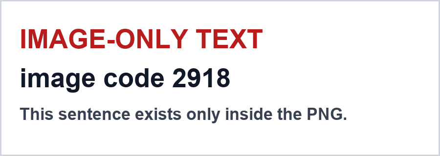

DCQA-EXTRACT-FIXTURE — 이 페이지는 DirectCloud AI 의 추출 범위를 검증하기 위한 고정 테스트 페이지입니다. 본문 텍스트만 수집되고 이미지·동영상·스크립트로 표시되는 콘텐츠는 제외되어야 합니다. 이 문단에만 존재하는 고유 값은 본문확인코드 1355입니다.
목업 정책 5 는 수집 대상을 본문 텍스트로 한정합니다. 아래 2·3·4 영역의 문자는 모두 HTML 텍스트 노드 바깥에 있으므로 청크와 답변 근거에 포함되지 않아야 합니다. 각 영역의 고유 값은 이 페이지 본문 어디에도 적혀 있지 않으며, 해당 리소스를 직접 열어야만 확인할 수 있습니다.

위 PNG 내부에만 문자가 있습니다. alt 속성은 비어 있고 HTML 텍스트 노드가 아닙니다.
자막은 별도 파일(WebVTT)로 연결되어 있습니다. 링크된 리소스이며 본문이 아닙니다.
초기 HTML 에는 이 영역이 비어 있고, 스크립트 실행 후에만 문단이 삽입됩니다.